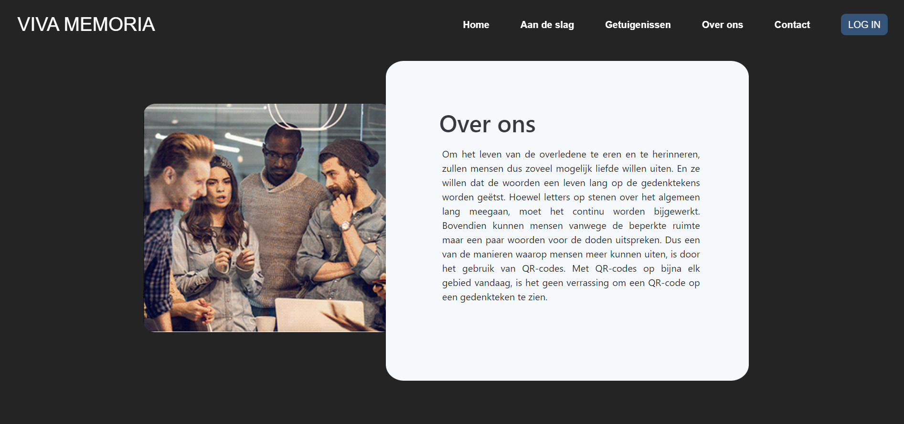
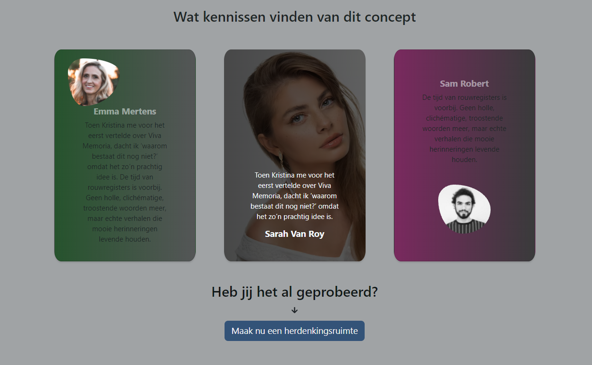

Reflectieverslag, week 5
18/10/2021 - 22/10/2021Deze week was een stressvolle week voor mij. Ik was achter mijn plannen voor implementaties.
Maandag:
Weer bezig met Homepage. Getuigenissen section voltooid.
Voor getuigenissen wou ik een slider gebruiken en na een onderzoek en kijken van aantal video's ben ik besloten om Swiper te gebruiken omdat men ermee heel mooie sliders kon tonen. Volgens die video's kon ik Swiper1 met React gebruiken maar alhoewel ik uren lang erover bezig was en had verscillende video's nagemaakt waren die nutteloze pogingen. Ten slote heb ik Carousel slider (a component van react-bootstrap2) gebruikt dat geen mooie visie had (volgens mezelf) maar was genoeg voor een korte moment dat ik het later kan bijwerken wat volgens mijn stage begelijder een fout idee was. Volgens hem moest ik een section vervolledigen en dan met een andere stuk beginnen, zo kon hij mij beter helpen (dit advies was voor enkele dagen later dat ik geblokkerd was met codes van een design dat ik niet kon tonen en de grote les van de week).
1. Swiper
Swiper is de modernste gratis mobiele aanraakschuifregelaar met hardwareversnelde overgangen en verbazingwekkend native gedrag. Het is bedoeld voor gebruik in mobiele websites, mobiele web-apps en mobiele native/hybride apps.
2. react-bootstrap
React-bootstrap is een front-end Stylesheet-bibliotheek. deze bibliotheek bouwt met twee bibliotheken, één is react.js en ten tweede bootstrap.
Dinsdag:
Bezig met Homepage. Header gemaakt.
In het eerste zicht vind men het design heel simpel maar heeft veel details om gebouwd te worden. Vandaag heb ik veel over CSS geleerd o.a. hoe ik een <div> tag order kan geven om in mobile versie anders kan getoond worden (bv. eerst een foto dan de tekst en omgekeerd). Ik heb Flexbox ervoor gebruikt (helaas geen slimme keuze). In plaats daarvan kon ik de technologie van grid die werken ermee heel makkelijker is gebruiken.
Woensdag:
Bezig met Homepage. Header responsief voor mobile gemaakt (niet volledig, zoekbalk is momenteel niet responsief).
Navbar gemaakt. Enkele video's gekeken hoe het voor mobile responsief kan maken en ben tegen styled-components gekomen.
styled-components is een bibliotheek voor React en React Native waarmee u stijlen op componentniveau in uw toepassing kunt gebruiken die zijn geschreven met een combinatie van JavaScript en CSS met behulp van een techniek die CSS-in-JS wordt genoemd.

Donderdag:
bezig met homepage.
- Navbaar responsief voor mobile
- Over ons herschrijven 
- Getuigenissen verbeterd.

Tijdens de vergadering wordt besloten dat getuigenissen geen slider meer zou zijn.
Vrijdag:
Tijdens de vergadering wordt besloten dat getuigenissen geen slider meer zou zijn, aantal verbeteringen in design en debug van inloggen button (het moet met twee andere buttons (mijn pagina's en welkom aan gebruiker) verplaats worden maar wordt onzichtbaar).
- Geprobeerd de bug van inloggen op te lossen maar lukte nog niet.
- Aan de slag verbeterd (er was een probleem met de size van illustraties daarom konden ze niet als een ronde circle getoond worden.
- Header verbeterd maar moet herschrijven worden met grid.
- Getuigenissen herschreven. Hiervoor heb ik "Fancy Border Radius Generator" gebruikt voor fotokaders.

Fancy Border Radius Generator
Een visuele generator om organisch ogende vormen te bouwen met behulp van CSS3 border-radius-eigenschap.